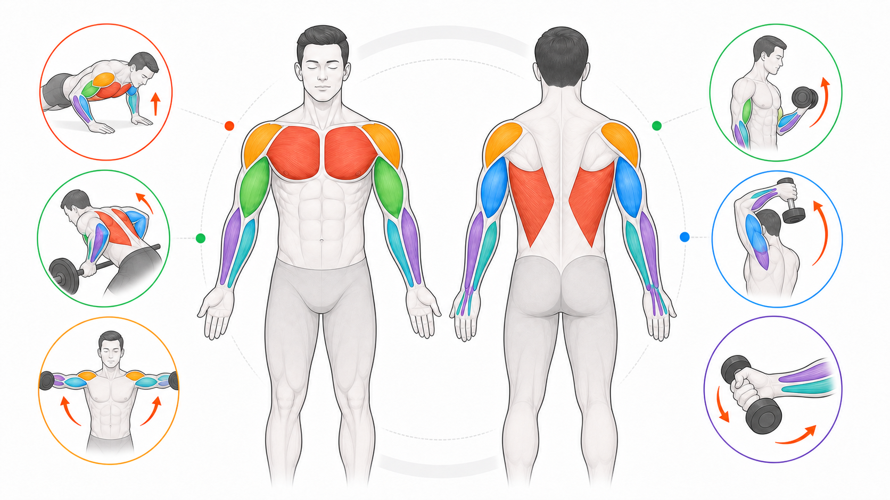

Day 14 · 第2周复盘-本体感觉/肌纤维/肌群/收缩

第2周核心不是散点背诵，而是一条动作分析链：感受器提供位置和张力反馈，肌纤维决定输出倾向，肌群负责关节动作，收缩类型描述动作阶段。
易混点优先记三组：肌梭看长度与速度，GTO 看张力；I 型耐疲劳，II 型偏力量速度，IIa 不会直接变 I 型；向心缩短、离心刹车、等长稳住。
打开 Day14 原学习页 →目标：拉回早上第2周复盘，把本体感觉、肌纤维、肌群功能、收缩类型和统计循证串起来。今天不学新内容，只做复盘。
第2周核心不是散点背诵，而是一条动作分析链：感受器提供位置和张力反馈，肌纤维决定输出倾向，肌群负责关节动作，收缩类型描述动作阶段。
易混点优先记三组：肌梭看长度与速度，GTO 看张力；I 型耐疲劳，II 型偏力量速度，IIa 不会直接变 I 型；向心缩短、离心刹车、等长稳住。
打开 Day14 原学习页 →


今日新知识 Day 14：用一句话串起本体感觉、肌纤维、肌群和收缩类型。
今日新知识 Day 14：肌梭和 GTO 各自感受什么？常见考试关键词是什么？
Day 13：深蹲下降、底部停顿、起立分别对应哪类收缩？
Day 13：为什么“离心=放松下降”是错的？
Day 11：卧推中胸大肌、三角肌前束、肱三头肌分别贡献什么？还需要哪些稳定？
Day 11：引体向上或下拉中，背阔肌主要让肩关节做什么动作？
Day 7：信度和效度怎么区分？举一个健身测试例子。
Day 7 + Day 14 综合：看到“补剂使用者肌肉量更高”的研究，为什么不能直接说补剂导致增肌？
| 易错点 | 错因 | 修正句 |
|---|---|---|
| 肌梭和 GTO 混淆 | 只记都是感受器，没记位置和刺激。 | 肌梭在肌腹看长度速度，GTO 在肌腱看张力。 |
| IIa 会直接变 I 型 | 把训练适应理解成纤维类型完全替换。 | 训练主要改变代谢能力、募集策略和 II 型亚型倾向，不写 IIa 直接变 I 型。 |
| 向心离心只看重量方向 | 没看目标肌长度变化。 | 看目标肌是在缩短、拉长还是长度基本不变。 |
| 肌群题背器械名 | 跳过关节动作分析。 | 先说肩、肘、腕或髋、膝、踝发生什么，再找主动肌和协同肌。 |
| 研究结论过度外推 | 只看 p 值或标题。 | 先看研究设计、样本、混杂变量、效果量和适用人群。 |